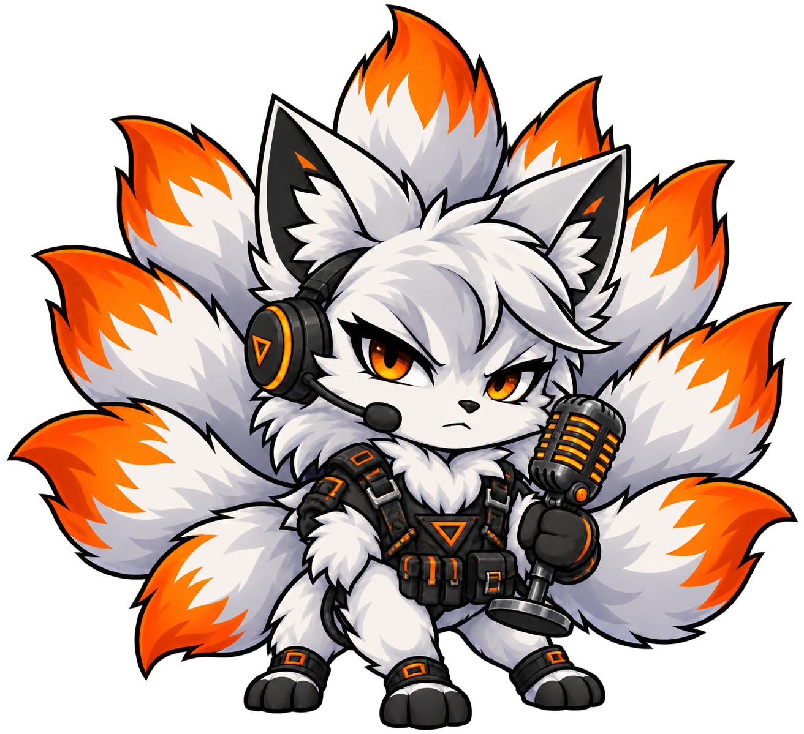

RM
RAiiNMAN
Mic check. Welcome to the station.
01 / SIGNAL ONLINE
An original DSI take on Discord customization.
Built to put the controls back in your hands.
BROWSER PROTOTYPE / v0.1.0

03 / GET ON AIR
chrome://extensions or edge://extensions, turn on Developer mode, then choose Load unpacked and select the extracted folder.Desktop browsers only. Android and the installed Discord desktop app are still in development. The extension has passed automated build checks; live Discord acceptance testing remains pending.